모놀로그(monologue)는 배우 한 명이 무대에서 혼자 길게 말하는 대사다. 이 자료에는 Harry Potter and the Cursed Child의 Scorpius, Find Me의 Verity, I Don't Want to Talk About It의 Chelsea, A Monster Calls의 Yew Tree(주목나무), Twelve Years Wise의 Grace, Spaghetti Bolognese의 Sam까지 여섯 개가 들어 있다. 하나를 골라 외우고 연기하는 데 쓰는 대본집이다.
Scorpius는 친구 Albus와 함께 시간을 되돌린 탓에 세상이 뒤틀렸다고 다급하게 설명한다. Ron과 Hermione가 결혼하지 않아 딸 Rose가 아예 태어나지 못했고, 시간여행은 다섯 시간까지만 안전하다는 Professor Croaker's law를 어겼다고 말한다. 작은 변화가 큰 파장(ripples)을 만든다는 것이 핵심 대사다.
Verity는 수영을 사랑하는 아이로 올림픽 챔피언이 되어 여왕을 만나는 꿈, 영국 해협(English Channel)을 건너는 꿈을 쉬지 않고 이야기한다. 문장이 짧고 반복이 많아서("I'm the best swimmer in...") 들뜬 어린아이의 말투가 그대로 드러난다. 반대로 Yew Tree는 "I am..."을 계속 반복하며 자기가 산과 강, 늑대와 뱀이라고 선언하는 웅장하고 무서운 말투다.
Chelsea와 Grace, Sam은 모두 1인칭으로 자기가 겪은 일을 이야기로 들려주는 방식이다. Chelsea는 할아버지 장례식에서 관 안에 에그롤을 떨어뜨린 일을 웃기게 말하다가 마지막에 뭉클해지고, Grace는 열두 살이지만 아빠에게 엄마한테 소리 지르지 말라고 조곤조곤 설득한다. Sam은 요리 이야기로 시작해 Hannah와의 세 번째 데이트가 어떻게 망했는지로 넘어간다.
같은 모놀로그라도 말투(tone)가 전부 다르다는 점이 이 모음집의 핵심이다. 다급함(Scorpius), 순수한 들뜸(Verity), 유머 뒤의 슬픔(Chelsea), 위엄(Yew Tree), 차분한 설득(Grace), 수다스러운 고백(Sam) — 고를 때는 내가 소리 내어 연기할 수 있는 감정인지를 기준으로 삼으면 된다.
✍️ 꼭 알아야 하는 것
각 모놀로그가 누구의 대사이고 어떤 상황에서 말하는 것인지 정리해 둔다. 상황을 모르면 감정을 실을 수 없다.
고른 대본의 모르는 단어를 미리 찾아 둔다(casket 관, respects 조의, devouring 삼키는, insensitive 배려 없는, simmer 뭉근히 끓이다 등).
넌 내가 벌어진 일을 그냥 무시하고 싶어 한다고 생각해? 세상이 미쳐 돌아가고 있어, 못 느꼈어? 론은 이상해졌고, 헤르미온느는 교수가 됐어. 전부 잘못됐고, 로즈는 존재하지 않아. 우리가 한 일 때문에 로즈는 태어나지도 못했어. 트리위저드 대회 크리스마스 무도회 이야기 기억나? 네 명의 챔피언이 모두 파트너를 데려갔지. 네 아빠는 파르바티 파틸을, 빅토르 크룸은 헤르미온느를 데려갔고, 론은 질투가 나서 바보처럼 굴었어… 그런데 그런 일이 없었어. 리타 스키터가 그들에 대해 쓴 책을 찾았는데, 내용이 아주 달라. 론은 헤르미온느를 친구로서 무도회에 데려갔고, 둘은 친구처럼 춤을 췄고, 그건 좋았어. 그 다음 론은 파드마 파틸과 춤을 췄는데 그게 더 좋았고, 둘은 사귀기 시작했고, 론은 조금 변했고, 결국 결혼했어. 그 사이 헤르미온느는― 헤르미온느는 원래 크룸과 무도회에 가기로 돼 있었어. 그런데 왜 안 갔는지 알아? 첫 번째 과제 전에 만난 두 이상한 덤스트랭 소년이 세드릭의 지팡이가 사라진 일에 관련됐다고 의심했기 때문이야. 우리가 빅토르의 지시로 세드릭이 첫 과제를 망치게 했다고 그녀는 믿었어… 크룸이 없으니 론은 질투하지 않았고, 그 질투가 무엇보다 중요했어. 그래서 론과 헤르미온느는 아주 좋은 친구로만 남았고 — 사랑에 빠지지 않았고 — 결혼하지 않았고 — 로즈를 낳지 않았어. 내 말 듣고 있어, 알버스? 이건 너와 네 아빠보다 더 큰 문제야. 크로커 교수의 법칙 — 여행자나 시간 그 자체에 심각한 해를 끼치지 않고 과거로 갈 수 있는 최대치는 다섯 시간이야. 그런데 우리는 몇 년을 거슬러 갔어. 아주 작은 순간, 아주 작은 변화도 파문을 일으켜. 그리고 우리는 — 우리는 정말 나쁜 파문을 만들어 버렸어.
스콜피우스가 알버스에게, 둘이 시간을 되돌린 탓에 현재가 바뀌어 로즈가 태어나지 않았다는 사실을 따지는 장면이다.
바뀐 흐름의 핵심 고리는 '크룸이 없음 → 론이 질투하지 않음 → 론과 헤르미온느가 사랑에 빠지지 않음 → 로즈가 없음'이며, 크로커 교수의 법칙(최대 다섯 시간)을 어긴 결과라고 말한다.
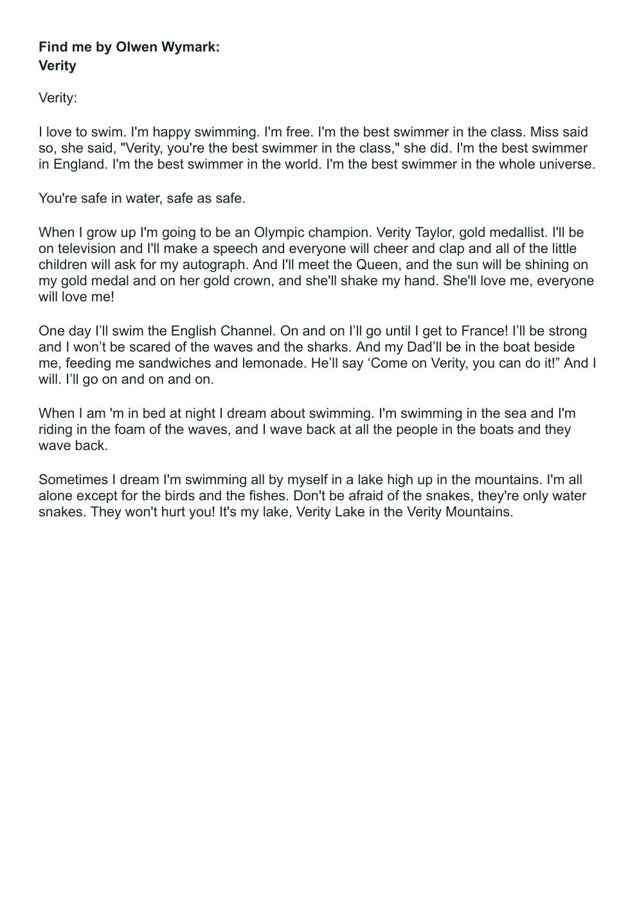
2쪽 · 베리티 — 나는 수영이 좋다
올웬 와이막의 Find me 중 베리티의 독백이다. 나는 수영하는 게 좋다. 수영할 때 나는 행복하다. 나는 자유롭다. 나는 반에서 제일 수영을 잘한다. 선생님이 그렇게 말했다, "베리티, 네가 반에서 제일 수영을 잘해"라고 말했다. 나는 영국에서 제일 수영을 잘한다. 나는 세계에서 제일 잘한다. 나는 온 우주에서 제일 잘한다. 물속에서는 안전하다, 더없이 안전하다. 나는 커서 올림픽 챔피언이 될 거다. 베리티 테일러, 금메달리스트. 나는 텔레비전에 나와 연설을 하고 모두가 환호하고 박수칠 거다. 어린아이들은 다 내 사인을 받으려 할 거다. 그리고 나는 여왕을 만날 거고, 햇빛이 내 금메달과 여왕의 금관 위에 비칠 거고, 여왕이 내 손을 잡아 흔들 거다. 여왕은 나를 사랑할 거고, 모두가 나를 사랑할 거다! 언젠가 나는 영국 해협을 헤엄쳐 건널 거다. 계속 계속 나아가 프랑스에 닿을 때까지 갈 거다. 나는 강할 거고 파도와 상어를 무서워하지 않을 거다. 그리고 아빠가 내 옆 배에 타서 샌드위치와 레모네이드를 먹여 줄 거다. 아빠는 "힘내 베리티, 너는 할 수 있어"라고 말할 거다. 그리고 나는 해낼 거다. 계속 계속 계속 나아갈 거다. 밤에 침대에 누우면 나는 수영하는 꿈을 꾼다. 나는 바다에서 헤엄치고 파도의 물거품을 타고, 배에 탄 사람들에게 손을 흔들면 그들도 손을 흔들어 준다. 가끔은 산 높은 곳의 호수에서 나 혼자 헤엄치는 꿈을 꾼다. 새들과 물고기들 말고는 나 혼자다. 물뱀을 무서워하지 마라, 그저 물뱀일 뿐이다. 너를 해치지 않을 거다! 그건 내 호수다, 베리티 산맥에 있는 베리티 호수다.
희곡 Find me(올웬 와이막)의 등장인물 베리티가 혼자 말하는 독백(monologue) 형식이다. 듣는 사람 없이 자기 생각을 그대로 쏟아내는 말투다.
시제가 세 갈래로 나뉜다 — 지금(현재: I love, I'm the best), 앞으로 될 일(미래 will/'ll: I'm going to be, I'll meet the Queen), 늘 반복되는 밤의 꿈(현재: I dream, I'm swimming). 같은 말을 겹쳐 쓰는 반복(the best swimmer…, on and on and on)이 베리티의 들뜬 마음을 드러낸다.
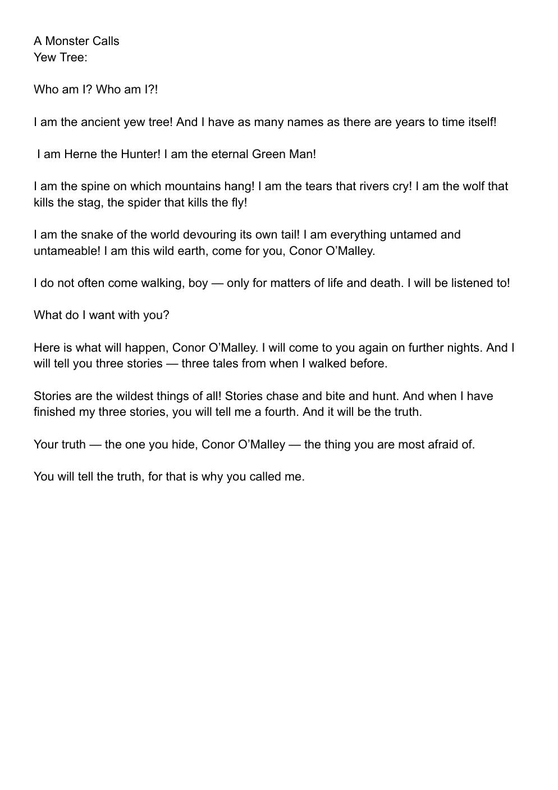
4쪽 · 주목받는 나무의 정체
괴물이 온다 주목나무: 나는 누구인가? 내가 누구냐고?! 나는 고대의 주목나무다! 그리고 나는 시간 그 자체에 흐른 세월만큼 많은 이름을 가졌다! 나는 사냥꾼 헌이다! 나는 영원한 그린 맨이다! 나는 산이 매달려 있는 등뼈다! 나는 강이 흘리는 눈물이다! 나는 수사슴을 죽이는 늑대요, 파리를 죽이는 거미다! 나는 제 꼬리를 삼키는 세계의 뱀이다! 나는 길들여지지 않았고 길들일 수도 없는 모든 것이다! 나는 이 야생의 대지이며, 너를 찾아왔다, 코너 오말리. 나는 자주 걸어 나오지 않는다, 얘야 — 오직 삶과 죽음의 문제일 때만이다. 나는 내 말을 듣게 만들 것이다! 내가 너에게 무엇을 원하느냐고? 앞으로 이런 일이 있을 것이다, 코너 오말리. 나는 다음 밤들에 다시 너에게 올 것이다. 그리고 너에게 세 가지 이야기를 들려주겠다 — 내가 예전에 걸어 다니던 때의 세 가지 이야기다. 이야기란 가장 야생적인 것이다! 이야기는 쫓고 물어뜯고 사냥한다. 그리고 내가 세 이야기를 다 끝내면, 너는 나에게 네 번째를 이야기하게 된다. 그리고 그것은 진실일 것이다. 네 진실 — 네가 숨기고 있는 그것, 코너 오말리 — 네가 가장 두려워하는 것 말이다. 너는 진실을 말하게 된다, 그것이 바로 네가 나를 불러낸 이유이기 때문이다.
주목나무는 자기가 누구인지 'I am ~' 문장을 반복해 쌓아 올리며 정체를 밝힌다. 헌·그린 맨·세계의 뱀 같은 여러 이름을 대고, 산의 등뼈·강의 눈물처럼 자연 전체를 자기라고 말한다.
괴물이 코너에게 제시하는 약속이 이 대사의 뼈대다. 세 가지 이야기를 들려준 뒤 코너가 네 번째 이야기를 해야 하며, 그것은 코너가 숨기고 가장 두려워하는 진실이어야 한다.
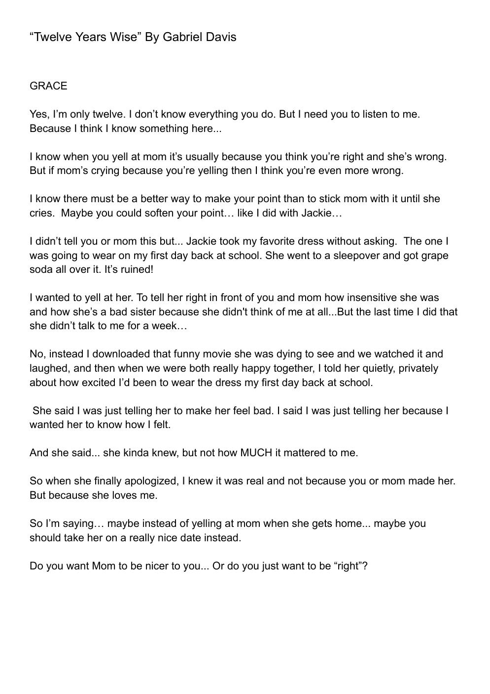
5쪽 · 열두 살의 지혜
“열두 살의 지혜” 개브리얼 데이비스 작
그레이스 맞아요, 저는 겨우 열두 살이에요. 아빠가 아는 걸 다 알지는 못해요. 하지만 제 말을 들어주셨으면 해요. 왜냐면 이건 제가 좀 안다고 생각하거든요... 아빠가 엄마한테 소리 지를 때는 보통 아빠가 옳고 엄마가 틀렸다고 생각해서라는 걸 알아요. 하지만 아빠가 소리 질러서 엄마가 울고 있다면, 그럼 아빠가 더 틀린 거라고 생각해요. 엄마가 울 때까지 몰아붙이는 것 말고, 하고 싶은 말을 전할 더 나은 방법이 분명 있을 거예요. 말을 좀 부드럽게 할 수도 있잖아요... 제가 재키한테 그랬던 것처럼요...
아빠한테도 엄마한테도 이 얘긴 안 했지만... 재키가 물어보지도 않고 제가 제일 좋아하는 원피스를 가져갔어요. 개학 첫날에 입으려던 그 옷이요. 언니는 친구 집에서 자고 오면서 거기에 포도 소다를 다 쏟았어요. 완전히 망가졌어요! 저는 언니한테 소리 지르고 싶었어요. 아빠 엄마 앞에서 언니가 얼마나 배려가 없는지, 제 생각은 하나도 안 하는 나쁜 언니라고 말해버리고 싶었어요... 그런데 지난번에 그랬을 때 언니는 일주일 동안 저랑 말을 안 했어요... 그래서 대신, 언니가 너무 보고 싶어 하던 웃긴 영화를 내려받아서 같이 보고 웃었어요. 그리고 둘 다 정말 기분이 좋아졌을 때, 조용히, 둘만 있을 때 말했어요. 개학 첫날에 그 옷을 입는 걸 제가 얼마나 기대했었는지요. 언니는 제가 자기 기분 나쁘라고 하는 말이라고 했어요. 저는 그냥 제 기분을 알아줬으면 해서 말하는 거라고 했어요. 그랬더니 언니가... 어느 정도는 알았지만, 그게 저한테 얼마나 중요한지는 몰랐다고 했어요. 그래서 언니가 마침내 사과했을 때, 저는 그게 진심이란 걸 알았어요. 아빠나 엄마가 시켜서가 아니라, 언니가 저를 사랑해서 한 거니까요.
그러니까 제 말은... 엄마가 집에 오면 소리 지르는 대신에... 엄마를 아주 근사한 데이트에 데려가는 건 어때요? 엄마가 아빠한테 더 잘해주길 바라세요... 아니면 그냥 “옳고” 싶으신 거예요?
딸 그레이스가 아빠에게 하는 혼잣말(모놀로그)이다. 아빠가 엄마에게 소리 지르는 것을 두고, 열두 살이지만 자기가 아는 것을 말하겠다고 시작한다.
자기 경험(언니 재키와 원피스 사건)을 예로 들어 주장을 편다 — 소리 지르면 관계가 끊기지만, 기분 좋을 때 조용히 마음을 전하면 진심 어린 사과를 받는다는 것이다.
마지막 질문 "엄마가 잘해주길 원하나, 아니면 그냥 옳고 싶은가"가 이 글의 핵심이다. 이기는 것과 관계를 지키는 것 중 무엇을 택하겠냐고 묻는다.
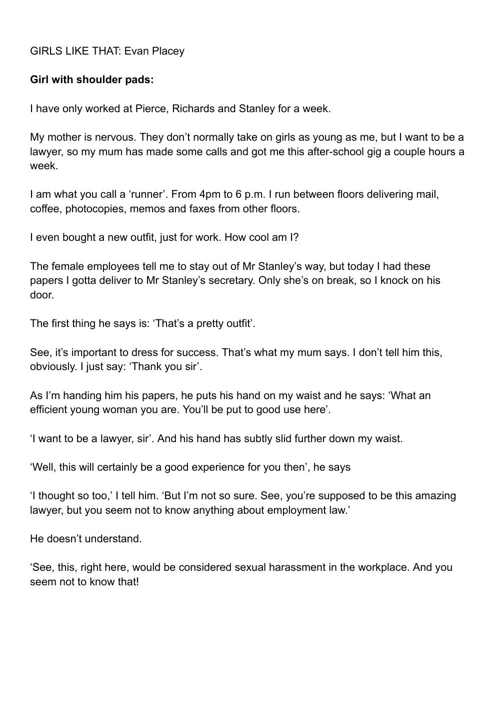
7쪽 · 직장 내 성희롱에 맞선 소녀
GIRLS LIKE THAT: 에반 플레이시(Evan Placey)
어깨 패드를 한 소녀:
나는 피어스, 리처즈 앤 스탠리에서 일한 지 겨우 일주일이 됐다.
엄마는 초조해한다. 그들은 보통 나만큼 어린 여자아이는 뽑지 않지만, 나는 변호사가 되고 싶어서 엄마가 여기저기 전화를 걸어 일주일에 몇 시간짜리 방과 후 일자리를 얻어 주었다.
나는 이른바 '러너(runner)'다. 오후 4시부터 6시까지 층 사이를 뛰어다니며 다른 층에서 온 우편물, 커피, 복사물, 메모, 팩스를 배달한다.
나는 오직 일하려고 새 옷까지 샀다. 나 정말 멋지지 않은가?
여직원들은 나에게 스탠리 씨를 피해 다니라고 말하지만, 오늘은 스탠리 씨의 비서에게 전해야 할 서류가 있었다. 그런데 비서가 쉬는 시간이라, 나는 그의 문을 두드린다.
그가 처음 하는 말은 이것이다: '예쁜 옷이구나'.
보다시피, 성공하려면 옷을 갖춰 입는 것이 중요하다. 엄마가 그렇게 말한다. 물론 나는 그에게 이 말을 하지 않는다. 그냥 '감사합니다, 선생님'이라고만 말한다.
내가 그에게 서류를 건네는데, 그가 내 허리에 손을 얹고 말한다: '참 유능한 아가씨로군. 여기서 아주 쓸모 있게 쓰이겠어'.
'저는 변호사가 되고 싶습니다, 선생님'. 그리고 그의 손이 슬며시 내 허리 아래로 더 미끄러져 내려갔다.
'그렇다면 이건 분명 너에게 좋은 경험이 될 거야', 그가 말한다.
'저도 그렇게 생각했어요,' 내가 그에게 말한다. '하지만 이제는 잘 모르겠네요. 보세요, 당신은 대단한 변호사여야 하는데, 고용법에 대해서는 아무것도 모르는 것 같으니까요.'
그는 이해하지 못한다.
'보세요, 바로 지금 이것은 직장 내 성희롱으로 여겨질 겁니다. 그런데 당신은 그걸 모르는 것 같군요!'
에반 플레이시의 에 나오는 독백으로, 법률 회사에서 방과 후 '러너'로 일하는 어린 소녀가 화자다.
앞부분의 들뜬 말투('나 정말 멋지지 않은가?')가 뒤로 갈수록 뒤집히며, 마지막에 소녀가 '직장 내 성희롱'과 '고용법'을 짚어 상대를 되받아치는 것이 이 독백의 전환점이다.
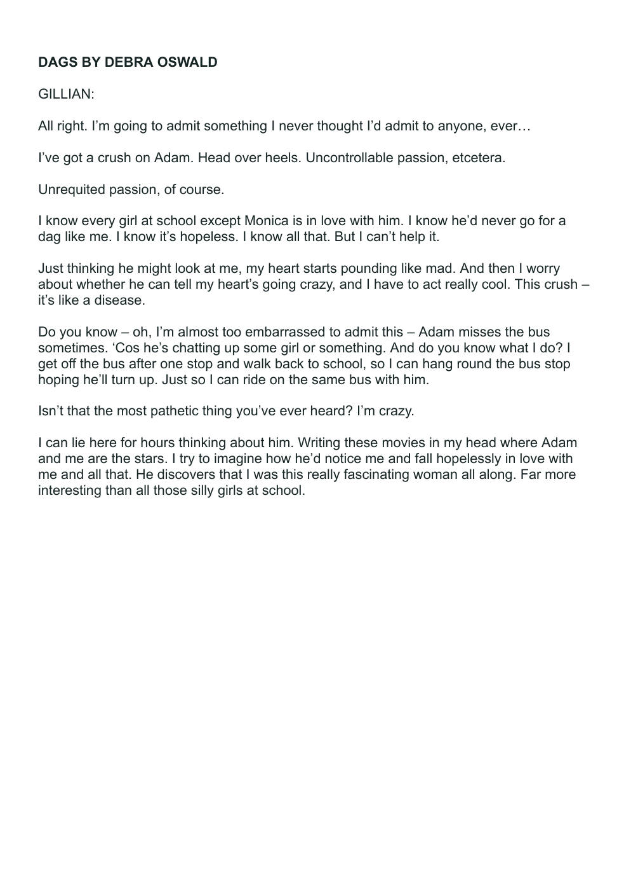
8쪽 · 질리언의 짝사랑 고백
대그스, 데브라 오스왈드 작. 질리언: 좋다. 누구에게도, 절대 말하지 않을 거라 생각했던 것을 고백하겠다. 나는 애덤에게 반했다. 완전히 푹 빠졌다. 걷잡을 수 없는 열정, 뭐 그런 것이다. 물론 짝사랑이다. 모니카만 빼고 학교의 모든 여자애가 그를 좋아하는 걸 안다. 그가 나 같은 촌스러운 애(dag)에게는 절대 관심 없을 것도 안다. 가망 없다는 것도 안다. 다 안다. 그런데도 어쩔 수 없다. 그가 나를 볼지도 모른다는 생각만으로 심장이 미친 듯이 뛴다. 그러다가 그가 내 심장이 요동치는 걸 눈치챌까 걱정돼서, 아주 태연한 척해야 한다. 이 짝사랑은 병 같다. 그런데 — 아, 이건 너무 창피해서 말하기도 힘든데 — 애덤은 가끔 버스를 놓친다. 어떤 여자애에게 수작을 걸거나 해서다. 그럼 내가 뭘 하는지 아는가? 나는 한 정거장 뒤에 버스에서 내려 학교까지 걸어 돌아간다. 버스 정류장 근처에서 그가 나타나기를 바라며 서성이려고. 그와 같은 버스를 타려고 그런다. 이건 정말 세상에서 제일 한심한 얘기 아닌가? 나는 미쳤다. 나는 몇 시간이고 여기 누워 그를 생각할 수 있다. 애덤과 내가 주인공인 영화를 머릿속에서 쓴다. 그가 나를 알아보고 나에게 걷잡을 수 없이 사랑에 빠지는 장면을 상상해 본다. 사실 내가 처음부터 매력적인 여자였다는 걸 그가 알아차리는 것이다. 학교의 그 시시한 여자애들보다 훨씬 더 흥미로운 사람이라고.
질리언은 자기 마음을 숨기지 않고 관객에게 직접 털어놓는 독백이며, '나는 안다(I know)'를 반복해 가망 없음을 알면서도 멈추지 못하는 마음을 드러낸다.
'dag'은 호주식 표현으로 촌스럽고 어수룩한 사람을 뜻하며, 작품 제목 Dags도 여기서 왔다. 'head over heels(푹 빠지다)', 'unrequited(보답받지 못한)', 'chat up(수작 걸다)' 같은 표현도 함께 익혀 둘 만하다.
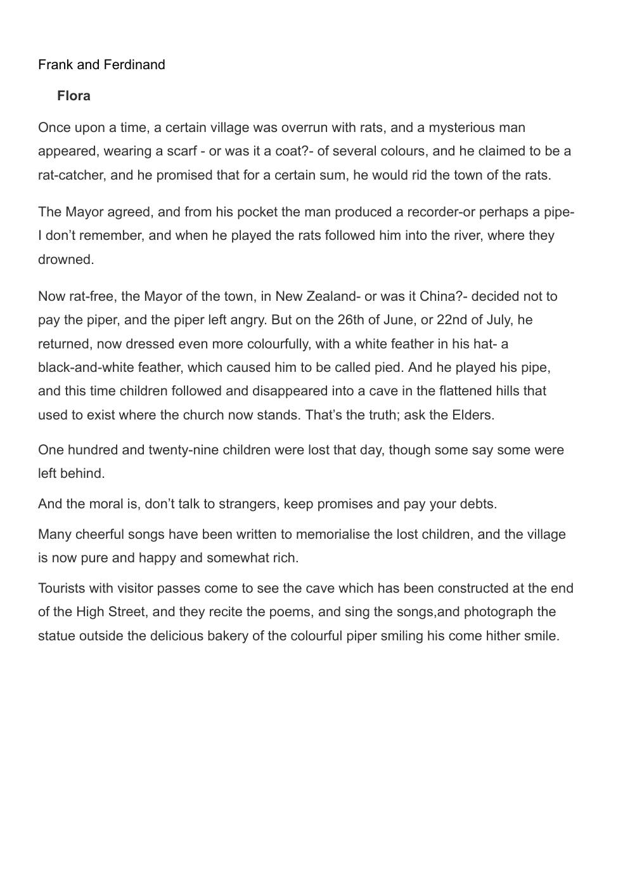
9쪽 · 피리 부는 사나이 이야기
프랭크와 페르디난드 플로라 옛날 옛적에 어떤 마을이 쥐들로 들끓었고, 여러 색깔의 목도리를―아니면 외투였나?―걸친 신비한 남자가 나타나 자기가 쥐잡이라고 했다. 그는 일정한 돈을 주면 마을에서 쥐를 없애주겠다고 약속했다. 시장이 승낙하자, 그 남자는 주머니에서 리코더를―아니면 피리였나?―꺼냈는데, 나는 기억이 안 난다. 그가 연주하자 쥐들이 그를 따라 강으로 들어가 빠져 죽었다. 이제 쥐가 없어지자, 뉴질랜드에 있는―아니면 중국이었나?―그 마을 시장은 피리 부는 사람에게 돈을 주지 않기로 했고, 그는 화가 나서 떠났다. 그런데 6월 26일에, 아니면 7월 22일에, 그는 더 화려한 옷을 입고 모자에 흰 깃털을―검고 흰 깃털을―꽂고 돌아왔고, 그래서 얼룩덜룩한(pied)이라고 불리게 되었다. 그가 피리를 불자, 이번에는 아이들이 따라가서 지금 교회가 서 있는 자리에 있던 평평해진 언덕의 동굴 속으로 사라졌다. 그게 진실이다. 어르신들께 물어보라. 그날 129명의 아이들이 사라졌지만, 몇몇은 남겨졌다고 말하는 사람도 있다. 그리고 교훈은, 낯선 사람과 말하지 말고, 약속을 지키고, 빚을 갚으라는 것이다. 사라진 아이들을 기리기 위해 밝은 노래가 많이 지어졌고, 마을은 이제 순수하고 행복하며 꽤 부유하다. 관광객들이 방문권을 들고 큰길 끝에 지어 놓은 동굴을 보러 와서, 시를 낭송하고 노래를 부르고, 맛있는 빵집 앞에 선 피리 부는 사나이 동상이 오라는 듯 웃고 있는 모습을 사진 찍는다.
말하는 사람은 '피리 부는 사나이' 이야기를 하면서 목도리인지 외투인지, 뉴질랜드인지 중국인지, 6월 26일인지 7월 22일인지 계속 헷갈려 한다. 그러면서도 '그게 진실이다'라고 말하는 점이 눈에 띈다.
아이들이 사라진 슬픈 사건인데 마을은 '순수하고 행복하고 부유하다'고 하고, 동굴은 진짜가 아니라 큰길 끝에 새로 '지어 놓은' 것이며, 관광객이 와서 사진을 찍는다. 비극이 관광 상품이 된 모습이다.
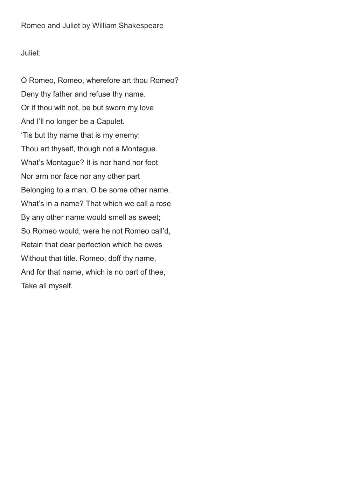
10쪽 · 로미오와 줄리엣 - 이름이 뭐길래
윌리엄 셰익스피어의 로미오와 줄리엣
줄리엣:
오 로미오, 로미오, 어찌하여 그대는 로미오인가요? 그대의 아버지를 부인하고 그대의 이름을 버리세요. 그게 싫다면, 나를 사랑한다고 맹세만 해 주세요. 그러면 나도 더 이상 캐퓰릿이 아니겠어요. 내 원수는 오직 그대의 이름일 뿐: 그대는 몬터규가 아니어도 그대 자신이에요. 몬터규가 뭔가요? 그것은 손도 발도 아니고 팔도 얼굴도, 사람에게 속한 그 어떤 부분도 아니에요. 오 다른 이름이 되어 주세요. 이름에 무엇이 들어 있나요? 우리가 장미라 부르는 것은 다른 어떤 이름으로 불러도 똑같이 향기로울 거예요. 그러니 로미오도, 로미오라 불리지 않는다 해도 그 이름 없이 지닌 그 소중한 완벽함을 그대로 간직할 거예요. 로미오, 그대의 이름을 벗어 던지세요. 그대의 일부도 아닌 그 이름 대신 나의 전부를 가지세요.
'wherefore'는 '어디에'가 아니라 '왜(어찌하여)'라는 뜻이다. 줄리엣은 로미오가 어디 있는지 찾는 것이 아니라 왜 하필 원수 집안의 이름을 가졌는지 한탄하는 것이다.
thou(너는)·thy(너의)·thee(너를)·thyself(너 자신)·art(=are)·wilt(=will)는 셰익스피어 시대의 옛 영어 형태다. 지금의 you·your·you·yourself·are·will로 바꿔 읽으면 뜻이 통한다.
장미의 비유가 이 독백의 핵심이다. 이름은 사람의 손·발·얼굴처럼 실제 일부가 아니므로, 이름만 버리면 사랑을 막을 것이 없다는 논리다.
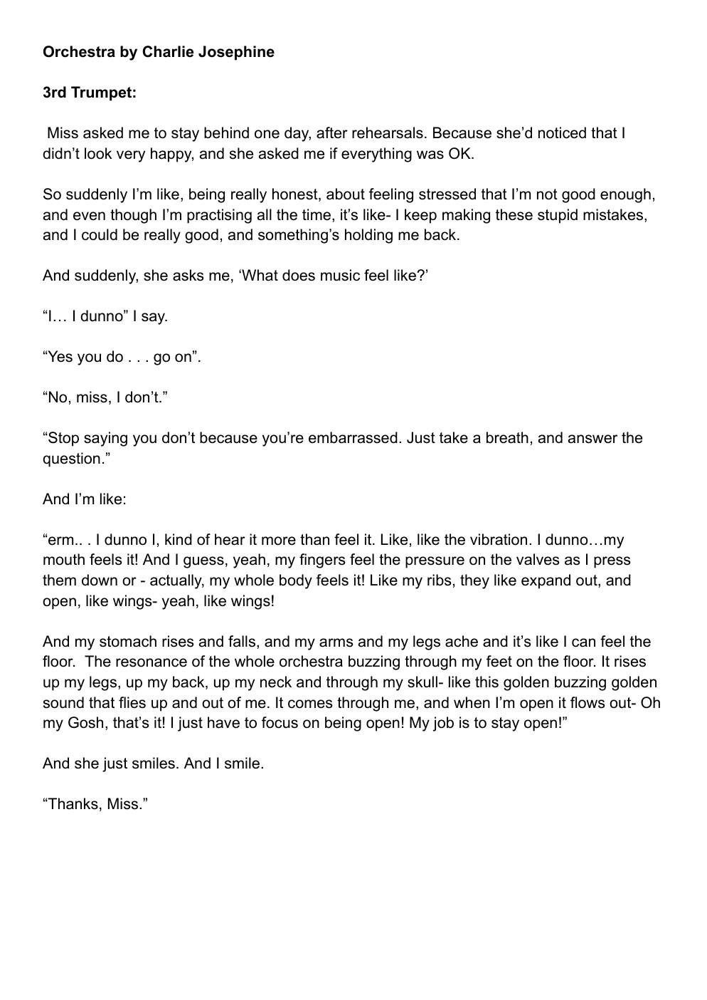
12쪽 · 오케스트라 — 셋째 트럼펫
찰리 조지핀의 오케스트라, 3번 트럼펫 역이다. 어느 날 연습이 끝난 뒤 선생님이 나를 남으라고 하셨다. 내가 행복해 보이지 않는 걸 눈치채시고 괜찮냐고 물으셨기 때문이다. 그래서 갑자기 나는 아주 솔직하게 말하고 있다. 내가 잘하지 못한다는 게 스트레스라고. 계속 연습하는데도 자꾸 바보 같은 실수를 한다고. 나는 정말 잘할 수 있는데 뭔가가 나를 붙잡고 있다고. 그러자 갑자기 선생님이 물으셨다. "음악은 어떤 느낌이니?" "저… 모르겠어요" 하고 나는 말한다. "알잖니… 어서 말해 봐." "아니요, 선생님, 모르겠어요." "부끄러워서 모른다고 하는 건 그만해. 그냥 숨을 한 번 쉬고, 질문에 답해 봐." 그래서 나는 이렇게 말한다. "음… 모르겠지만, 저는 그걸 느낀다기보다 더 듣는 것 같아요. 진동처럼요. 모르겠어요… 제 입이 그걸 느껴요! 그리고 손가락은 밸브를 누를 때 그 압력을 느끼는 것 같고— 아니, 사실은 온몸이 그걸 느껴요! 갈비뼈가 이렇게 바깥으로 벌어지고, 열려요, 날개처럼요. 네, 날개처럼요! 그리고 배가 오르내리고, 팔과 다리가 아프고, 바닥이 느껴져요. 오케스트라 전체의 울림이 바닥을 딛은 제 발을 타고 웅웅 울려요. 그게 다리를 타고 올라와, 등을 타고, 목을 타고, 머리뼈를 통과해요— 이 황금빛으로 웅웅거리는 황금빛 소리가 제게서 날아올라 밖으로 나가는 것처럼요. 그건 저를 통과해서 오고, 제가 열려 있을 때 밖으로 흘러나가요— 아 세상에, 바로 그거예요! 저는 그냥 열려 있는 것에 집중하면 돼요! 제 일은 열린 채로 있는 거예요!" 그러자 선생님은 그냥 웃으신다. 그리고 나도 웃는다. "고맙습니다, 선생님."
잘하지 못한다는 불안으로 시작해, 선생님의 '음악은 어떤 느낌이니?'라는 한 질문을 따라가다가 '내 일은 열린 채로 있는 것'이라는 깨달음에 닿는 흐름이다. 감정이 스트레스 → 머뭇거림 → 몰입 → 확신 순으로 바뀌므로, 연기할 때 이 변화를 목소리로 나눠야 한다.
몸의 감각을 아래에서 위로 훑어 올라가는 묘사가 이 대사의 중심이다. 입 → 손가락 → 갈비뼈 → 배 → 팔다리 → 발 → 다리 → 등 → 목 → 머리 순으로 올라가고, 갈비뼈를 '날개'에, 소리를 '황금빛 웅웅거림'에 빗대는 비유를 쓴다.
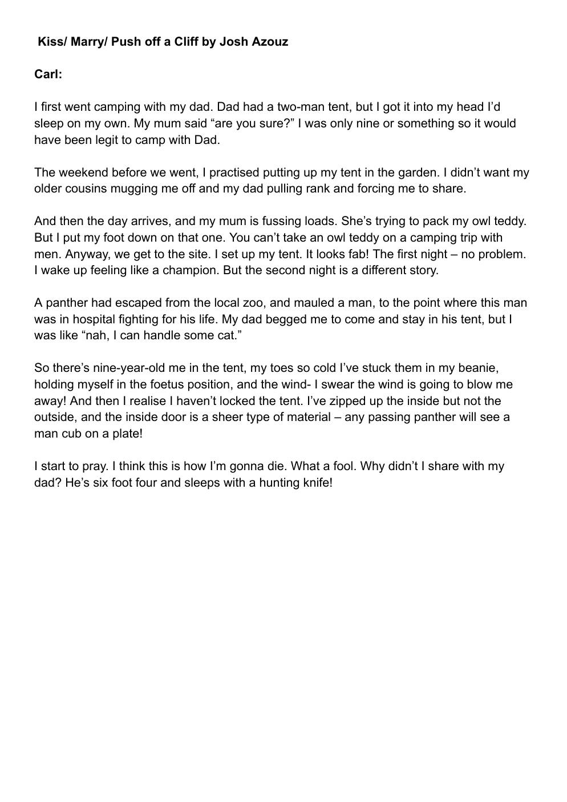
13쪽 · 캠핑 첫날 밤 혼자 자기
Kiss/ Marry/ Push off a Cliff, 조시 아주즈(Josh Azouz) 작. 칼(Carl): 나는 처음 캠핑을 아빠와 함께 갔다. 아빠에게는 2인용 텐트가 있었지만, 나는 혼자 자겠다는 생각에 사로잡혔다. 엄마는 "정말 괜찮겠니?"라고 물었다. 나는 겨우 아홉 살쯤이었으니 아빠와 같이 자도 아무 문제 없었을 것이다. 캠핑 가기 전 주말에, 나는 정원에서 텐트 치는 연습을 했다. 나이 많은 사촌들에게 놀림당하거나, 아빠가 권위를 내세워 같이 자자고 강요하는 게 싫었다. 드디어 그날이 오자 엄마는 잔뜩 부산을 떨었다. 엄마는 내 올빼미 인형을 챙겨 넣으려 했다. 하지만 그것만은 내가 단호히 거절했다. 남자들끼리 가는 캠핑에 올빼미 인형을 가져갈 수는 없다. 아무튼 우리는 캠핑장에 도착했다. 나는 텐트를 세웠다. 정말 근사해 보였다! 첫날 밤은 아무 문제 없었다. 나는 챔피언이 된 기분으로 잠에서 깼다. 하지만 둘째 날 밤은 이야기가 달랐다. 동네 동물원에서 표범(panther)이 탈출해 한 남자를 덮쳤고, 그 남자는 병원에서 사경을 헤매고 있었다. 아빠는 자기 텐트로 오라고 애원했지만, 나는 "괜찮아, 고양이 한 마리쯤은 감당할 수 있어"라고 했다. 그래서 아홉 살짜리 내가 텐트 안에 있었다. 발가락이 너무 시려서 비니 모자 안에 발을 집어넣고, 태아처럼 웅크린 자세로 몸을 감싸고 있었다. 그리고 바람은― 정말이지 바람이 나를 날려버릴 것 같았다! 그때 나는 텐트를 잠그지 않았다는 걸 깨달았다. 안쪽 문은 잠갔지만 바깥쪽은 잠그지 않았고, 안쪽 문은 비치는 재질이었다. 지나가던 표범이라면 접시에 놓인 새끼 인간을 보게 될 것이다! 나는 기도하기 시작했다. 이렇게 죽는구나 싶었다. 정말 바보 같았다. 왜 아빠와 같이 자지 않았을까? 아빠는 키가 6피트 4인치에 사냥칼을 옆에 두고 자는데!
1인칭 회상 독백이다. 아홉 살 때 겪은 일을 어른이 된 화자가 지금 이야기하듯 들려주는 구조여서, 과거 사건을 말하면서도 현재형(the day arrives, we get to the site, I start to pray)을 섞어 쓴다. 긴장이 높아지는 대목에서 현재형으로 바뀌는 것이 이 대사의 특징이다.
영국 구어체 표현이 많다. mug someone off(놀리다·바보 취급하다), pull rank(윗사람 권위를 내세우다), put my foot down(단호히 반대하다), fab(멋진), "I was like"(~라고 말했다), nah(아니), gonna(going to)가 그렇다. 시험 지문보다 실제 말하기에 가까운 문체다.
겁먹은 상태를 몸으로 보여 준다. 발가락을 비니에 넣고, foetus position(태아 자세)으로 웅크리고, 기도를 시작한다. 무섭다고 직접 말하는 대신 행동으로 감정을 드러내는 방식이다.
마지막 대비가 이 대사의 핵심이다. "고양이 한 마리쯤 감당할 수 있어"라던 큰소리와, 사냥칼을 두고 자는 6피트 4인치 아빠 옆이 그리워지는 결말이 맞붙는다. 스스로를 "What a fool"이라 부르며 허세가 무너지는 지점이다.
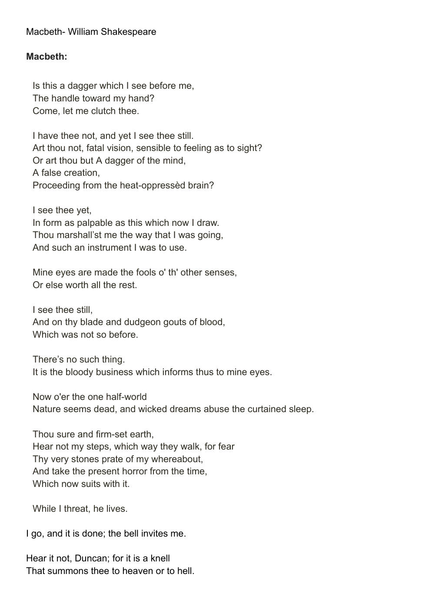
14쪽 · 맥베스 — 단검 환영 독백
맥베스 — 윌리엄 셰익스피어 맥베스: 내 앞에 보이는 이것이 단검인가, 손잡이를 내 손 쪽으로 돌린 채로? 오라, 내가 너를 움켜쥐게 해다오.
나는 너를 잡지 못했는데, 그런데도 너를 여전히 본다. 운명의 환영이여, 너는 눈에 보이는 것처럼 손으로도 느낄 수 있는 것이 아니냐? 아니면 너는 그저 마음이 만든 단검, 거짓으로 지어낸 것, 열에 짓눌린 머리에서 나온 것이냐?
나는 아직도 너를 본다, 지금 내가 뽑는 이 칼만큼이나 또렷한 모습으로. 너는 내가 가려던 그 길로 나를 이끈다, 그리고 나는 바로 그런 도구를 쓰려던 참이었다.
내 눈은 다른 감각들에게 바보가 된 것이거나, 아니면 나머지 전부보다 더 값진 것이거나.
나는 여전히 너를 본다, 그리고 네 칼날과 손잡이에는 피가 방울져 있다, 아까는 그렇지 않았는데.
그런 것은 없다. 내 눈에 이렇게 알려 오는 것은 저 피비린 일이다.
이제 세상의 절반에서 자연은 죽은 듯하고, 사악한 꿈이 휘장 친 잠을 괴롭힌다.
단단하고 굳게 자리 잡은 땅이여, 내 발걸음이 어디로 가는지 듣지 말아다오, 네 돌들이 내가 어디 있는지 떠들어대어 지금 이 시간에 어울리는 공포를 이 순간에서 앗아갈까 두렵다.
내가 이렇게 으르는 동안, 그는 살아 있다.
나는 간다, 그리고 그것은 이루어진다. 종이 나를 부른다.
그 소리를 듣지 마라, 던컨이여. 그것은 너를 천국이나 지옥으로 부르는 조종이니.
맥베스가 던컨을 죽이러 가기 직전, 눈앞에 떠오른 피 묻은 단검 환영을 두고 그것이 진짜인지 마음이 만든 것인지 스스로 따지는 독백이다.
눈(sight)과 손의 감촉(feeling)을 대비시키며 자기 감각을 의심하다가, 끝에는 종소리를 신호로 삼아 살인을 실행하러 떠나는 흐름으로 마무리된다.
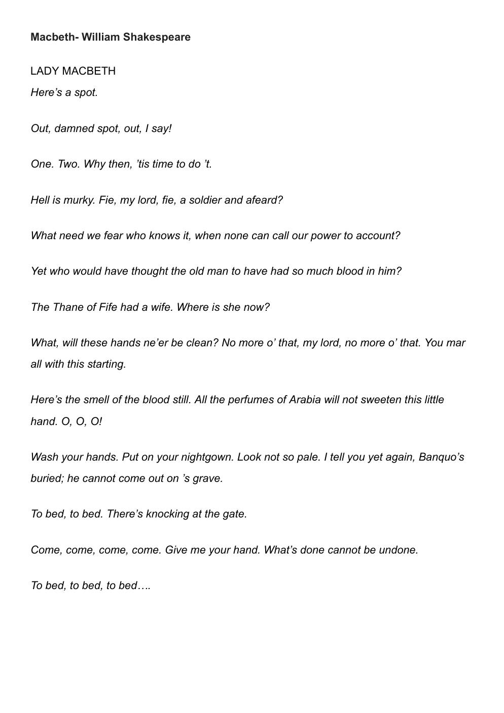
15쪽 · 맥베스 — 레이디 맥베스의 몽유병
맥베스 — 윌리엄 셰익스피어 레이디 맥베스 여기 얼룩이 있다. 없어져라, 저주받은 얼룩아, 없어지라니까! 하나. 둘. 그렇다면 이제 그걸 할 시간이다. 지옥은 어둡다. 쳇, 여보, 쳇, 군인이면서 겁을 낸단 말인가? 누가 그걸 안다 한들 우리가 왜 두려워하겠는가, 아무도 우리 권력을 추궁하지 못하는데? 그런데 누가 그 노인에게 그토록 많은 피가 있었으리라 생각했겠는가? 파이프의 영주에게는 아내가 있었다. 그 여자는 지금 어디에 있는가? 무엇이냐, 이 손은 영영 깨끗해지지 않는 것인가? 그만하세요, 여보, 그만. 그렇게 놀라시면 다 망칩니다. 아직도 여기 피 냄새가 난다. 아라비아의 모든 향수를 다 써도 이 작은 손을 향기롭게 하지 못한다. 오, 오, 오! 손을 씻으세요. 잠옷을 입으세요. 그렇게 창백한 얼굴 하지 마세요. 다시 말하지만 뱅쿠오는 묻혔습니다. 무덤에서 나올 수 없어요. 잠자리로, 잠자리로. 문에서 두드리는 소리가 난다. 어서, 어서, 어서, 어서. 손을 이리 주세요. 이미 한 일은 되돌릴 수 없습니다. 잠자리로, 잠자리로, 잠자리로….
레이디 맥베스가 손에 묻은 피 얼룩을 지우려 하지만 지워지지 않는다고 되풀이하는 대목이다. '없어져라, 저주받은 얼룩아'와 '아라비아의 모든 향수를 다 써도 이 작은 손을 향기롭게 하지 못한다'가 이 독백의 대표 구절이다.
말이 한 흐름으로 이어지지 않고 명령·질문·회상이 뒤섞여 튀는 점이 특징이다. 남편에게 하는 말('여보, 그만하세요', '손을 씻으세요')과 혼잣말이 섞여 있고, 노인의 피·파이프 영주의 아내·뱅쿠오의 무덤처럼 서로 다른 일들이 잇달아 나온다.
마지막 문장 '이미 한 일은 되돌릴 수 없다(What's done cannot be undone)'가 이 독백의 결론에 해당한다.
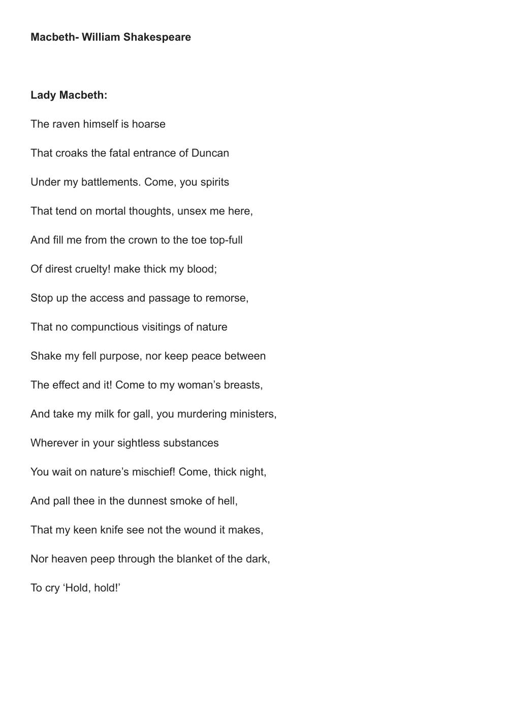
16쪽 · 맥베스 부인의 독백 — 잔혹함을 구하다
맥베스 — 윌리엄 셰익스피어 맥베스 부인: 까마귀조차 목이 쉬었다, 던컨이 내 성벽 아래로 들어오는 죽음의 입성을 알리며 우는 그 까마귀가. 오라, 죽음의 생각을 돌보는 정령들이여, 여기서 나의 여자다움을 지워다오. 그리고 정수리부터 발끝까지 나를 가장 지독한 잔혹함으로 가득 채워라. 내 피를 진하게 만들어라. 후회로 가는 통로와 길을 막아버려라. 인간 본성이 불러일으키는 어떤 가책도 나의 모진 결심을 흔들지 못하게, 결심과 실행 사이를 갈라놓지 못하게 하라. 내 여자의 젖가슴으로 와서 젖을 쓸개즙으로 바꾸어 가라, 살인을 돌보는 신하들이여. 보이지 않는 형체로 어디에 있든 자연의 재앙을 기다리는 너희여. 오라, 짙은 밤이여, 지옥의 가장 어두운 연기로 너를 감싸라. 그리하여 내 날카로운 칼이 제가 내는 상처를 보지 못하게 하고, 하늘이 어둠의 장막 사이로 엿보며 '멈춰라, 멈춰라!'라고 외치지 못하게 하라.
셰익스피어의 비극 『맥베스』에 나오는 맥베스 부인의 독백이다. 남편이 왕 던컨을 죽이도록 이끌기 위해, 부인이 스스로 잔혹해지기를 정령들에게 부르짖는 장면이다.
호소(Come, you spirits / Come, thick night)를 반복하고, 피를 진하게 하고 젖을 쓸개즙으로 바꾸며 밤이 칼을 가리게 해달라는 어둡고 강한 이미지를 쌓아 올린다. 낭독할 때는 이 명령형과 이미지의 격렬함을 살려야 한다.
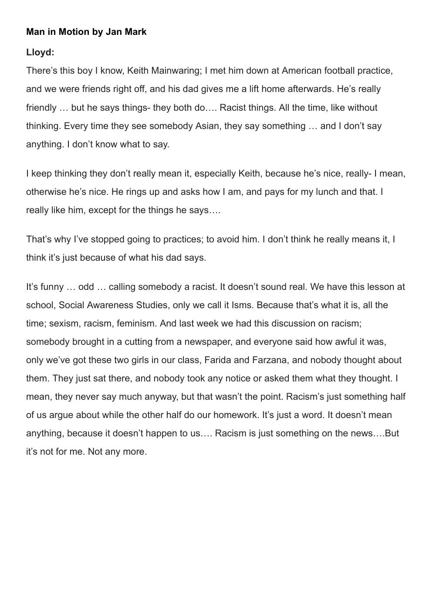
17쪽 · 연습을 그만둔 이유
얀 마크의 Man in Motion 중 로이드의 독백이다. 내가 아는 키스 메인워링이라는 남자애가 있다. 미식축구 연습에서 만나 바로 친구가 됐고, 그 애 아빠가 끝나면 나를 집까지 태워다 준다. 정말 친절하다… 그런데 그 애도 아빠도 말을 한다… 인종차별적인 말을. 아무 생각 없이 늘 그런다. 아시아 사람만 보면 뭐라고 한마디씩 하는데… 나는 아무 말도 못 한다. 무슨 말을 해야 할지 모르겠다. 그 애들이 진심은 아닐 거라고 계속 생각한다. 특히 키스는 착하니까. 내 말은, 그것만 빼면 착하다는 거다. 전화해서 잘 지내냐고 묻고, 내 점심값도 내준다. 그 애가 하는 말만 빼면 나는 정말 그 애가 좋다…. 그래서 나는 연습에 나가는 걸 그만뒀다. 그 애를 피하려고. 진심은 아닐 거다. 그냥 자기 아빠가 하는 말 때문일 거라고 생각한다. 누군가를 인종차별주의자라고 부르는 건 웃기다… 이상하다. 진짜 같지가 않다. 학교에 사회 인식 수업이 있는데, 우리는 그걸 '~주의(Isms)'라고 부른다. 늘 그런 것들뿐이니까. 성차별·인종차별·여성주의. 지난주엔 인종차별에 대해 토론을 했다. 누가 신문에서 오린 기사를 가져왔고, 다들 정말 끔찍하다고 말했다. 그런데 우리 반에 파리다와 파르자나라는 여자애 둘이 있는데, 아무도 그 애들 생각은 하지 않았다. 그 애들은 그냥 앉아 있었고, 아무도 신경 쓰거나 어떻게 생각하는지 묻지 않았다. 원래 말이 별로 없는 애들이긴 하지만, 그게 핵심이 아니었다. 인종차별은 우리 중 절반이 말다툼하는 동안 나머지 절반은 숙제를 하는, 그런 것일 뿐이다. 그냥 단어일 뿐이다. 아무 의미도 없다. 우리에게 일어나는 일이 아니니까…. 인종차별은 그냥 뉴스에 나오는 일일 뿐이다…. 하지만 나에게는 아니다. 더 이상은 아니다.
로이드는 친구 키스를 좋아하지만 그와 그 아빠의 인종차별 발언 때문에 미식축구 연습에 나가지 않게 됐다. 좋아하는 마음과 상처가 함께 있어 말을 못 하고 피하는 쪽을 택한 인물이다.
마지막 부분이 이 독백의 전환점이다. '인종차별은 뉴스에나 나오는 남 일'이라고 말하다가 '하지만 나에게는 아니다, 더 이상은'으로 끝나며, 자기 일이 되어버렸음을 깨닫는다. 수업에서 파리다와 파르자나를 아무도 신경 쓰지 않은 장면이 그 깨달음의 근거로 쓰인다.
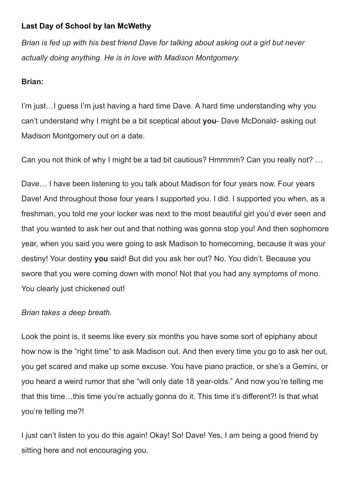
18쪽 · 학교 마지막 날 — 브라이언의 잔소리
이언 맥웨시가 쓴 Last Day of School이다. 브라이언은 여자에게 데이트 신청하겠다는 말만 하고 정작 아무것도 하지 않는 단짝 데이브에게 질려 있다. 데이브는 매디슨 몽고메리를 사랑하고 있다. 브라이언: 나는 그냥… 좀 힘든 것 같아, 데이브. 네가 왜 내 말을 이해 못 하는지 이해하기가 힘들어. 왜 내가 너 - 데이브 맥도널드 - 가 매디슨 몽고메리에게 데이트 신청하는 걸 좀 미심쩍게(sceptical) 볼 수밖에 없는지 말이야. 내가 왜 조금 조심스러운지(cautious) 정말 짐작도 안 되니? 흐음? 정말 모르겠어? … 데이브… 나는 네가 매디슨 이야기하는 걸 4년째 듣고 있어. 4년이야 데이브! 그 4년 내내 나는 너를 응원했어. 진짜 그랬어. 네가 신입생(freshman) 때, 사물함이 여태 본 중 가장 예쁜 여자애 옆이라고, 데이트 신청할 거고 아무것도 널 막지 못할 거라고 했을 때도 나는 응원했어! 그리고 2학년(sophomore) 때, 매디슨에게 홈커밍(homecoming) 파티를 같이 가자고 하겠다고 했지. 그게 네 운명(destiny)이라면서! 운명이라고 했잖아! 그런데 신청했어? 아니. 안 했어. 단핵구증(mono)에 걸리는 중인 것 같다고 우겼으니까! 증상은 하나도 없었으면서. 그냥 대놓고 겁먹고 물러난(chickened out) 거잖아! 브라이언이 깊게 숨을 들이쉰다. 봐, 요점은 이거야. 너는 여섯 달마다 지금이야말로 매디슨에게 데이트 신청할 "적기"라는 깨달음(epiphany)을 얻는 것 같아. 그리고 매번 신청하러 갈 때마다 겁을 먹고 핑계를 지어내지. 피아노 연습이 있다느니, 그 애가 쌍둥이자리(Gemini)라느니, 그 애가 "18살하고만 사귄다"는 이상한 소문을 들었다느니. 그래놓고 이번엔… 이번엔 진짜로 할 거라고 나한테 말하는 거야. 이번엔 다르다고?! 그 말을 지금 나한테 하는 거야?! 나는 네가 이러는 걸 또 듣고 있을 수가 없어! 알겠어! 그러니까! 데이브! 그래, 나는 여기 앉아서 너를 부추기지 않는 걸로 좋은 친구 노릇을 하고 있는 거야.
화자는 브라이언이고, 상대(데이브)는 무대에 대사가 없는 일방적 대화 형식이다. 대답 없는 상대에게 질문을 던지고 스스로 이어가는 흐름이라, 연기할 때 상대의 반응을 상상하며 사이(pause)를 두는 것이 중요하다.
감정이 4년치 사례를 시간 순서(freshman → sophomore → 지금)로 쌓아 올리며 점점 커진다. 'Four years Dave!', 'Your destiny you said!', '이번엔 다르다고?!'처럼 같은 말을 되받아 반복하고 느낌표·물음표가 겹치는 부분이 감정이 터지는 지점이다.
brian의 마지막 줄은 앞의 비난과 달리 자기를 좋은 친구라고 주장하는 반전이다. 잔소리처럼 보이지만 속뜻은 친구를 또 실망하게 두고 싶지 않다는 애정이라는 점을 알고 읽어야 한다.
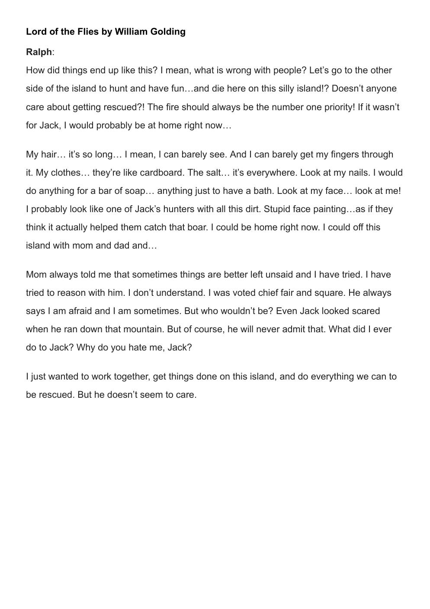
19쪽 · 파리대왕 — 랠프의 독백
윌리엄 골딩의 『파리대왕』 랠프: 어쩌다 일이 이 지경이 됐을까? 내 말은, 사람들은 대체 뭐가 문제인 걸까? 섬 반대편으로 가서 사냥하고 놀자고…그러다 이 어이없는 섬에서 죽자고!? 구조되는 데 관심 있는 사람은 아무도 없는 거야?! 불은 언제나 최우선이어야 해! 잭만 아니었으면 나는 지금쯤 집에 있었을 텐데… 내 머리카락… 너무 길어… 앞이 거의 안 보일 정도야. 손가락도 잘 안 들어가. 내 옷은… 마치 판지 같아. 소금이… 온 사방에 있어. 내 손톱 좀 봐. 비누 한 조각을 위해서라면 뭐든 하겠어… 목욕 한 번만 할 수 있다면 뭐든지. 내 얼굴 좀 봐… 나 좀 봐! 이 흙먼지를 다 뒤집어쓰니 나도 잭의 사냥꾼들 중 하나처럼 보이겠지. 바보 같은 얼굴 칠…그게 그 멧돼지를 잡는 데 정말 도움이 됐다고 생각하는 것처럼. 나는 지금 집에 있을 수도 있었어. 엄마 아빠와 함께 이 섬을 떠날 수도 있었는데… 엄마는 늘 어떤 말은 하지 않는 게 낫다고 하셨고, 나도 그러려고 애썼어. 나는 그와 이치를 따져 이야기해 보려고 했어. 이해가 안 돼. 나는 정정당당하게 대장으로 뽑혔어. 그는 늘 내가 겁먹었다고 말해. 사실 가끔은 그래. 하지만 안 무서울 사람이 어디 있어? 잭조차도 그 산을 뛰어 내려올 때 겁먹은 얼굴이었어. 물론 그는 절대 그걸 인정하지 않겠지. 내가 잭한테 뭘 어쨌다고? 잭, 너는 왜 나를 미워하는 거야? 나는 그저 함께 힘을 모아 이 섬에서 할 일을 해내고, 구조되기 위해 할 수 있는 모든 걸 하고 싶었을 뿐이야. 그런데 그는 신경도 안 쓰는 것 같아.
랠프는 '불(구조 신호)'을 최우선으로 여기는데 잭은 사냥과 재미를 앞세운다 — 두 사람의 대립이 이 독백의 핵심이다.
긴 머리·판지 같은 옷·소금·때 묻은 얼굴 같은 몸 상태 묘사가 문명에서 멀어진 시간의 길이를 보여준다.
랠프는 자신이 정정당당하게 대장으로 뽑혔다고 말하면서도 겁이 날 때가 있다고 인정한다 — 잭은 그 두려움을 절대 인정하지 않는 인물로 대비된다.
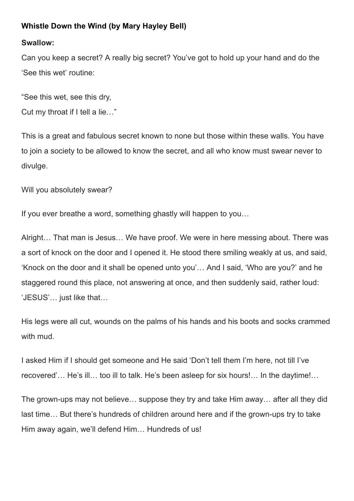
20쪽 · 휘슬 다운 더 윈드 — 비밀
Whistle Down the Wind (메리 헤일리 벨 작) 스왈로: 너 비밀 지킬 수 있어? 진짜 큰 비밀 말이야? 손을 들고 '이 침을 보라' 의식을 해야 해: "이 젖은 것을 보라, 이 마른 것을 보라, 내가 거짓말하면 내 목을 베어라…" 이건 이 벽 안에 있는 사람들 말고는 아무도 모르는 위대하고 굉장한 비밀이야. 비밀을 알려면 모임에 들어와야 하고, 아는 사람은 모두 절대 발설하지 않겠다고 맹세해야 해. 정말로 맹세할 거야? 한 마디라도 흘리면 끔찍한 일이 너한테 일어날 거야… 좋아… 저 남자는 예수님이야… 우리한테 증거가 있어. 우리가 여기서 장난치고 있었는데, 문에서 두드리는 소리 같은 게 나서 내가 열었어. 그가 우리에게 힘없이 웃으며 서서 말했어, '문을 두드려라, 그러면 너희에게 열릴 것이다'… 그래서 내가 '당신은 누구세요?' 했더니, 그는 바로 대답하지 않고 이 안을 비틀거리며 돌아다니다가, 갑자기 꽤 큰 소리로 말했어: '예수'… 딱 그렇게… 그의 다리는 온통 베여 있었고, 손바닥에는 상처가 있었고, 부츠와 양말에는 진흙이 꽉 차 있었어. 내가 그에게 누굴 불러올까요 물었더니 그가 말했어 '내가 회복할 때까지는 내가 여기 있다고 말하지 마라'… 그는 아프셔… 말도 못 할 만큼 아파. 그는 여섯 시간이나 잠들어 있었어!… 대낮에!… 어른들은 안 믿을지도 몰라… 그들이 그를 데려가려 하면 어쩌지… 결국 지난번에도 그들이 그랬잖아… 하지만 여기 근처엔 아이들이 수백 명이나 있고, 어른들이 다시 그를 데려가려 하면, 우리가 그를 지킬 거야… 우리 수백 명이!
아이가 낯선 남자를 예수라고 믿는 장면이다. 손바닥의 상처, 문 두드리는 이야기('Knock on the door and it shall be opened unto you'), 대낮에 여섯 시간 잔 것을 아이는 증거로 든다.
비밀 맹세로 시작해 마지막엔 '수백 명이 지킬 거야'로 끝난다. 속삭이듯 조심스럽게 시작해 점점 흥분하고 단호해지는 어조 변화가 이 독백의 핵심이다.
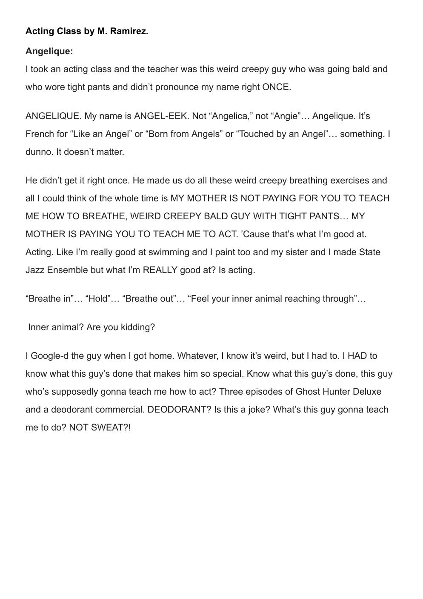
21쪽 · 연기 수업과 그 선생님
M. 라미레즈가 쓴 연기 수업. 안젤리크: 나는 연기 수업을 들었는데, 선생님은 머리가 벗겨져 가고 꽉 끼는 바지를 입은 이상하고 소름 끼치는 남자였고, 내 이름을 단 한 번도 제대로 발음하지 못했다. 안젤리크. 내 이름은 앤젤-이크다. '안젤리카'도 아니고 '앤지'도 아니고… 안젤리크다. 프랑스어로 '천사 같은' 또는 '천사에게서 태어난' 또는 '천사가 어루만진'… 뭐 그런 뜻이다. 나도 잘 모른다. 그건 중요하지 않다. 그는 한 번도 제대로 부르지 못했다. 그는 우리에게 이상하고 소름 끼치는 호흡 연습을 시켰고, 그 내내 내 머릿속에 든 생각은 이것뿐이었다. 우리 엄마는 당신한테 숨 쉬는 법을 배우라고 돈을 내는 게 아니다, 꽉 끼는 바지를 입은 이상하고 소름 끼치는 대머리 아저씨야… 우리 엄마는 나에게 연기를 가르치라고 당신에게 돈을 내는 거다. 그게 내가 잘하는 것이니까. 연기 말이다. 나는 수영도 정말 잘하고 그림도 그리고 언니(동생)와 나는 주 재즈 앙상블에도 뽑혔지만, 내가 정말로 잘하는 게 뭐냐고? 연기다. "숨을 들이쉬고"… "멈추고"… "내쉬고"… "내면의 동물이 뻗어 나오는 걸 느껴 보세요"… 내면의 동물? 지금 장난하나? 집에 와서 나는 그 남자를 구글에 검색해 봤다. 뭐, 이상한 짓인 건 알지만 그래야만 했다. 이 남자가 도대체 뭘 했길래 그렇게 대단한 건지 알아야만 했다. 나에게 연기를 가르친다는 이 남자가 뭘 했는지 아는가? 고스트 헌터 디럭스 세 편과 데오드란트 광고 하나다. 데오드란트? 이게 농담인가? 이 남자가 나에게 뭘 가르쳐 줄 건가? 땀 안 흘리는 법?!
안젤리크는 자기 이름을 제대로 불러 주지 않는 연기 선생님에게 화가 나 있고, 호흡 연습 대신 진짜 연기를 배우고 싶어 한다.
마지막에 선생님의 경력이 드라마 세 편과 데오드란트 광고뿐임을 알고 비웃는데, '땀 안 흘리는 법을 가르쳐 주려나'라는 말이 데오드란트를 빗댄 농담이다.
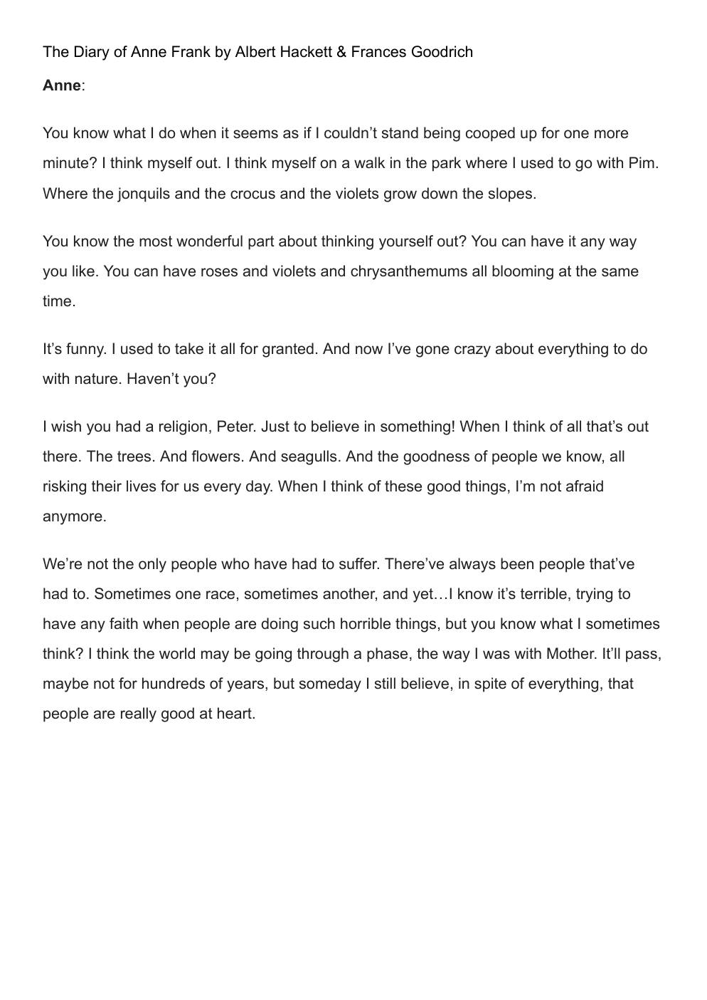
22쪽 · 안네의 일기 — 마음으로 밖에 나가기
『안네의 일기』, 앨버트 해킷·프랜시스 굿리치 지음 안네: 한순간도 더 갇혀 지내는 걸 못 견딜 것 같을 때 내가 뭘 하는지 아니? 나는 생각으로 나를 밖에 내보낸다. 나는 예전에 핌과 함께 가던 공원을 걷는 나를 떠올린다. 비탈 아래로 수선화와 크로커스와 제비꽃이 자라던 곳이다. 생각으로 밖에 나가는 것의 가장 멋진 점이 뭔지 아니? 네가 원하는 대로 다 할 수 있다는 것이다. 장미와 제비꽃과 국화가 한꺼번에 피어 있게 할 수도 있다. 우습다. 나는 예전엔 그 모든 걸 당연하게 여겼다. 그런데 지금은 자연에 관한 거라면 뭐든 미치도록 좋아하게 됐다. 너도 그렇지 않니? 나는 네가 믿음을 가졌으면 좋겠어, 피터. 그저 무언가를 믿는다는 것 말이야! 저 바깥에 있는 모든 걸 생각하면 그렇다. 나무들. 그리고 꽃들. 그리고 갈매기들. 그리고 우리를 위해 날마다 목숨을 걸고 있는, 우리가 아는 사람들의 선함. 이런 좋은 것들을 생각하면 나는 더는 두렵지 않다. 고통을 겪어야 했던 사람이 우리만은 아니다. 늘 그래야 했던 사람들이 있었다. 어떨 땐 어느 한 민족이, 어떨 땐 또 다른 민족이 그랬다. 사람들이 그런 끔찍한 짓을 하고 있는데 믿음을 가지려 애쓰는 게 무섭다는 걸 안다. 하지만 내가 가끔 무슨 생각을 하는지 아니? 내가 엄마와 그랬던 것처럼, 세상도 지금 한 시기를 지나는 중일지 모른다고 생각한다. 그건 지나갈 것이다. 어쩌면 수백 년은 걸릴지도 모르지만. 그래도 나는 언젠가는, 그 모든 일에도 불구하고, 사람들은 정말로 마음속은 선하다고 여전히 믿는다.
갇힌 방에서 상상으로 공원·꽃을 떠올리는 앞부분과, 피터에게 믿음을 이야기하는 뒷부분으로 나뉜다. 앞은 밝고 들뜬 말투로, 뒤는 차분하고 진지한 말투로 연기하면 대비가 산다.
마지막 문장 'in spite of everything, that people are really good at heart(그 모든 일에도 불구하고 사람들은 마음속은 선하다)'가 이 대사의 결론이므로, 천천히 또박또박 맺는 것이 좋다.
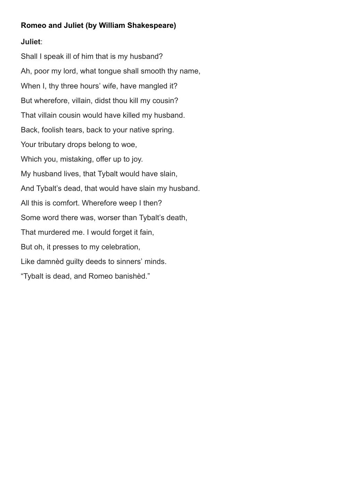
24쪽 · 로미오와 줄리엣 — 줄리엣의 독백
로미오와 줄리엣 (윌리엄 셰익스피어 작) 줄리엣: 내 남편인 그를 내가 나쁘게 말해야 하는가? 아, 가여운 내 님이여, 결혼한 지 세 시간밖에 안 된 아내인 내가 당신의 이름을 갈기갈기 찢어 놓았으니, 어떤 혀가 그 이름을 다시 곱게 펴 줄까? 하지만 악당이여, 어찌하여 당신은 내 사촌을 죽였는가? 그 악당 같은 사촌이야말로 내 남편을 죽였을 사람이다. 물러가라, 어리석은 눈물아, 네가 나온 샘으로 돌아가라. 네가 바치는 물방울은 슬픔에 바쳐야 할 것인데, 너는 잘못 알고 그것을 기쁨에 바치고 있구나. 티볼트가 죽였을 내 남편은 살아 있고, 내 남편을 죽였을 티볼트는 죽었다. 이 모든 것이 위로다. 그런데 나는 어찌하여 우는가? 티볼트의 죽음보다 더 나쁜 어떤 말이 있었고, 그 말이 나를 죽였다. 기꺼이 그것을 잊고 싶지만, 죄인의 마음에 저주받은 죄가 짓누르듯, 그 말이 내 마음을 짓누른다. "티볼트는 죽었고, 로미오는 추방되었다."
줄리엣이 혼자 말하는 독백이다. 남편 로미오를 욕할 것인가 감쌀 것인가 사이에서 마음이 왔다 갔다 하다가, 로미오가 살아 있으니 위로라고 스스로를 달랜다.
셰익스피어의 옛 영어가 쓰였다. thy=your, thou/didst=you/did, wherefore=why, fain=기꺼이, slain=killed, woe=슬픔이다. 마지막 줄의 banishèd는 è에 강세를 줘 세 음절(ba-nish-ed)로 읽으라는 표시다.
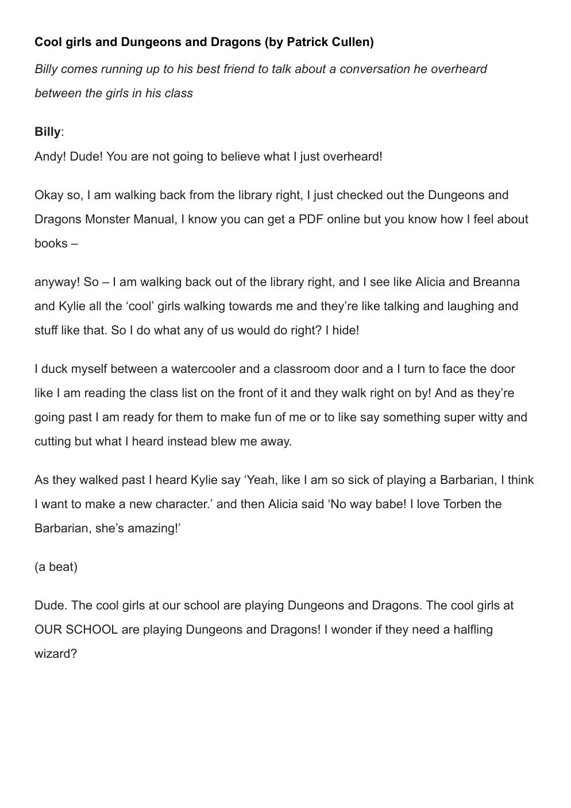
25쪽 · 쿨한 여자애들과 던전 앤 드래곤
쿨한 여자애들과 던전 앤 드래곤 (패트릭 컬런 지음) 빌리가 가장 친한 친구에게 달려와, 반 여자애들이 나누는 대화를 우연히 엿들은 이야기를 한다. 빌리: 앤디! 야! 내가 방금 뭘 엿들었는지 넌 못 믿을 거야! 그러니까, 내가 도서관에서 걸어 나오는 중이었어, 던전 앤 드래곤 몬스터 매뉴얼을 막 빌렸거든, 온라인에서 PDF로 구할 수 있는 건 알지만 내가 책을 어떻게 생각하는지 너도 알잖아 – 아무튼! 그래서 – 내가 도서관에서 걸어 나오는데, 알리샤랑 브리애나랑 카일리, 그 '쿨한' 여자애들이 다 나를 향해 걸어오는 게 보여, 걔들은 이야기하고 웃고 그러고 있어. 그래서 나는 우리 중 누구라도 할 법한 짓을 하지. 나는 숨는다! 나는 정수기와 교실 문 사이로 몸을 숙여 넣고, 문에 붙은 반 명단을 읽는 척하며 문 쪽으로 돌아섰고, 걔들은 그냥 지나쳐 갔어! 그리고 걔들이 지나갈 때 나는 걔들이 나를 놀리거나 엄청 재치 있고 날카로운 말을 할 거라고 각오하고 있었는데, 대신 내가 들은 말이 나를 완전히 놀라게 했어. 걔들이 지나갈 때 카일리가 이렇게 말하는 걸 들었어 '그래, 나 바바리안 하는 거 너무 지겨워, 새 캐릭터를 만들까 봐.' 그러자 알리샤가 말했어 '말도 안 돼! 나는 바바리안 토르벤이 정말 좋아, 걔 대단하잖아!' (잠시 멈춤) 야. 우리 학교 쿨한 여자애들이 던전 앤 드래곤을 하고 있어. 우리 학교 쿨한 여자애들이 던전 앤 드래곤을 하고 있다고! 걔들한테 하플링 위저드가 필요하진 않을까?
혼자 말하는 모놀로그(monologue) 대본이다. 빌리가 친구 앤디에게 방금 있었던 일을 흥분해서 그대로 들려주는 형식이고, 지금 일어나는 일처럼 현재시제(I am walking, I hide, I duck)로 말하는 것이 특징이다.
overhear는 '엿듣다'가 아니라 '우연히 듣게 되다'라는 뜻이다. 그 밖에 duck(몸을 숙이다), blow away(깜짝 놀라게 하다), make fun of(놀리다), be sick of(~에 질리다), cutting(말이 신랄한)이 이 쪽의 핵심 표현이다.
Dungeons and Dragons는 캐릭터를 만들어 이야기를 진행하는 역할놀이 게임이고, Barbarian·halfling wizard는 그 게임의 캐릭터 종류다. 이 사실을 알아야 '쿨한 여자애들이 D&D를 한다'는 마지막 반전이 왜 놀라운지 이해된다.
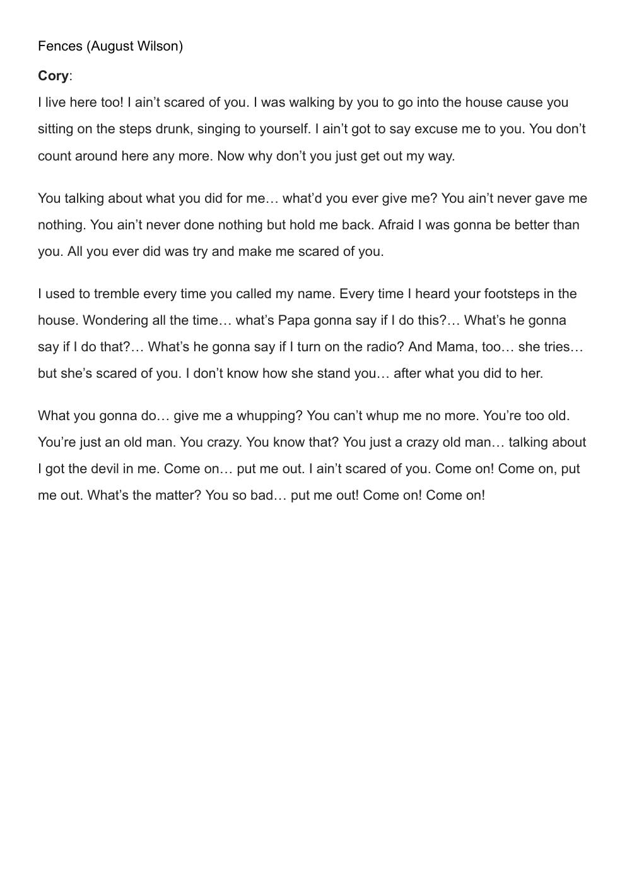
27쪽 · 펜스 — 코리가 아버지에게 맞서다
Fences (오거스트 윌슨) 코리: 나도 여기 살아! 나는 당신이 무섭지 않아. 당신이 술 취해 계단에 앉아 혼자 노래를 부르고 있으니까, 집에 들어가려고 당신 옆을 지나 걸어간 것뿐이야. 당신한테 실례한다고 말할 필요 없어. 당신은 이제 이 집에서 아무것도 아니야. 그러니 그냥 내 앞에서 비켜. 당신이 나를 위해 해준 걸 말하는데… 나한테 뭘 줬는데? 당신은 나한테 아무것도 준 게 없어. 나를 붙잡아 두는 것 말고는 아무것도 한 게 없어. 내가 당신보다 나아질까 봐 두려웠던 거지. 당신이 한 일이라곤 내가 당신을 무서워하게 만드는 것뿐이었어. 나는 당신이 내 이름을 부를 때마다 떨었어. 집 안에서 당신 발소리가 들릴 때마다. 늘 생각했지… 내가 이걸 하면 아버지가 뭐라고 할까?… 저걸 하면 뭐라고 할까?… 라디오를 켜면 뭐라고 할까? 엄마도 마찬가지야… 엄마는 애쓰지만… 엄마도 당신을 무서워해. 엄마가 어떻게 당신을 견디는지 모르겠어… 당신이 엄마한테 한 짓을 생각하면. 이제 어쩔 건데… 나를 때리기라도 할 거야? 당신은 이제 나를 못 때려. 당신은 너무 늙었어. 당신은 그냥 늙은이야. 당신 미쳤어. 알아? 당신은 그냥 미친 늙은이야… 내 안에 악마가 있다는 소리나 하고. 어디 해봐… 나를 내쫓아 봐. 나는 안 무서워. 어디 해봐! 어서, 나를 내쫓아 봐. 왜 그래? 그렇게 대단하다면… 나를 내쫓아 봐! 어서! 어서!
아들 코리가 아버지에게 정면으로 맞서며 더 이상 두려워하지 않는다고 선언하는 장면이다. 'I ain't scared of you(나는 당신이 무섭지 않아)'가 처음과 끝에 반복되며 대사 전체를 묶는 축이 된다.
ain't never gave me nothing, don't count, ain't got to 처럼 문법에서 벗어난 이중부정과 축약이 계속 나온다. 이는 인물의 말투와 계층을 드러내려고 작가가 일부러 쓴 것이므로 틀린 문장으로 보면 안 된다.
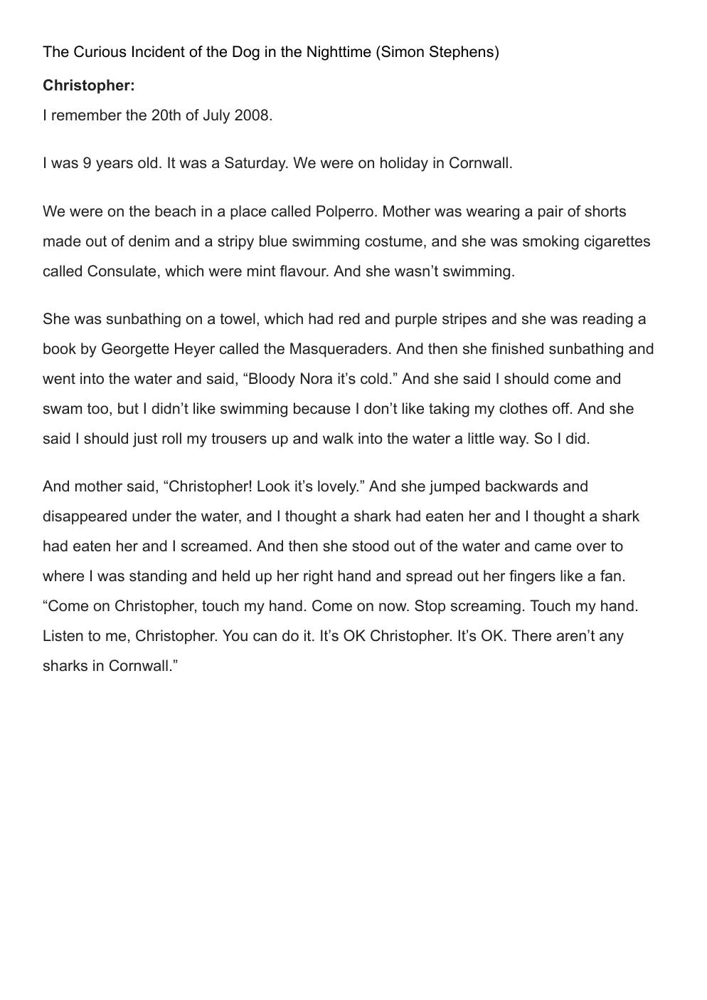
28쪽 · 엄마와 콘월 바닷가의 기억
『한밤중에 개에게 일어난 의문의 사건』(사이먼 스티븐스) 크리스토퍼: 나는 2008년 7월 20일을 기억한다. 나는 아홉 살이었다. 토요일이었다. 우리는 콘월로 휴가를 가 있었다. 우리는 폴페로라는 곳의 해변에 있었다. 엄마는 데님으로 만든 반바지와 파란 줄무늬 수영복을 입고 있었고, 콘슐레이트라는 민트 맛 담배를 피우고 있었다. 그리고 엄마는 수영을 하지 않고 있었다. 엄마는 빨간색과 보라색 줄무늬가 있는 수건 위에서 일광욕을 하고 있었고, 조젯 헤이어가 쓴 『가장한 사람들』이라는 책을 읽고 있었다. 그러다 일광욕을 끝내고 물속으로 들어가서 "어이구 세상에, 차가워"라고 말했다. 그리고 엄마는 나더러 와서 수영도 하라고 했지만, 나는 옷 벗는 걸 좋아하지 않아서 수영을 좋아하지 않았다. 그러자 엄마는 바지만 걷어 올리고 물속으로 조금만 걸어 들어오라고 했다. 그래서 나는 그렇게 했다. 그리고 엄마가 "크리스토퍼! 봐, 정말 좋아"라고 말했다. 그러고는 뒤로 펄쩍 뛰어 물속으로 사라졌고, 나는 상어가 엄마를 잡아먹었다고 생각했고, 나는 상어가 엄마를 잡아먹었다고 생각해서 비명을 질렀다. 그러자 엄마는 물 밖으로 일어서서 내가 서 있는 곳으로 와, 오른손을 들어 올려 손가락을 부채처럼 쫙 폈다. "이리 와 크리스토퍼, 내 손을 만져. 어서. 그만 소리 질러. 내 손을 만져. 내 말 들어, 크리스토퍼. 넌 할 수 있어. 괜찮아 크리스토퍼. 괜찮아. 콘월에는 상어가 없어."
크리스토퍼는 날짜·옷·담배 이름·수건 무늬·책 제목까지 아주 자세히 기억해 늘어놓는다. 이렇게 세부를 하나하나 붙이는 말투 자체가 이 인물을 보여 주는 방식이다.
엄마가 물속으로 사라지자 상어가 잡아먹었다고 생각해 비명을 지르고, 엄마는 손가락을 펴서 손을 만지게 하며 진정시킨다. 몸이 닿는 대신 손끝만 맞대는 이 방식과 "괜찮아"를 반복하는 말이 두 사람 관계를 드러낸다.
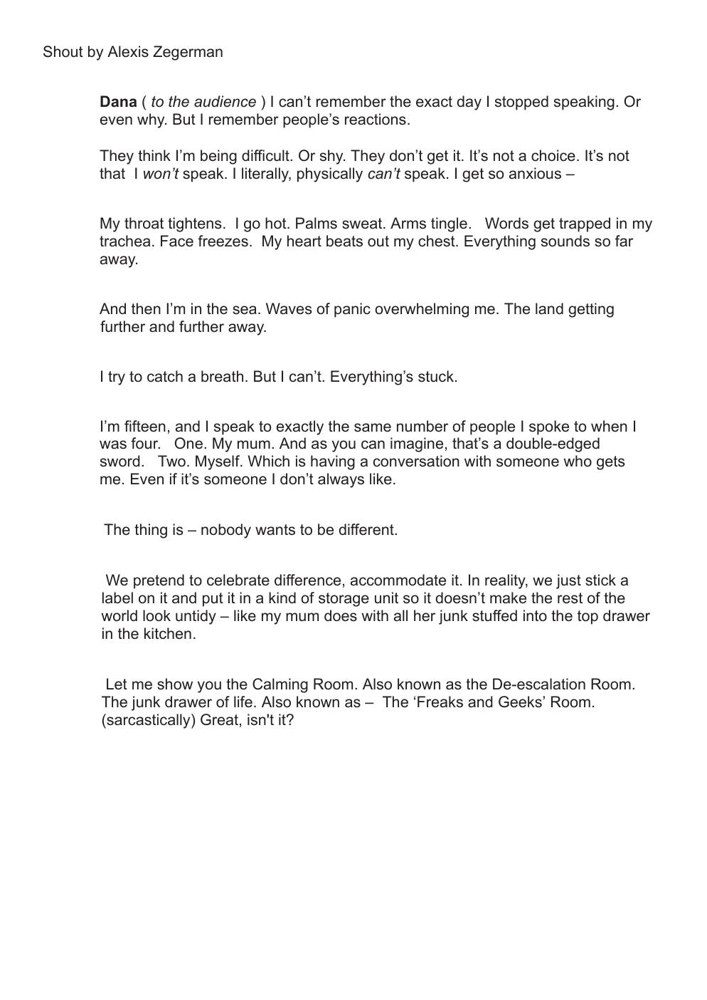
29쪽 · 침묵과 '진정실'
Alexis Zegerman이 쓴 Shout이다. 다나 (관객에게) 내가 정확히 어느 날 말을 멈췄는지 기억나지 않는다. 왜 그랬는지도 기억나지 않는다. 하지만 사람들의 반응은 기억한다. 사람들은 내가 까다롭게 군다고, 아니면 수줍어서 그런다고 생각한다. 그들은 이해하지 못한다. 이건 선택이 아니다. 내가 말을 안 하겠다는 게 아니다. 나는 말 그대로, 몸이 말을 못 한다. 너무 불안해져서 — 목이 조여든다. 몸이 뜨거워진다. 손바닥에 땀이 난다. 팔이 저릿하다. 말들이 기도(trachea) 안에 갇힌다. 얼굴이 굳는다. 심장이 가슴 밖으로 튀어나올 듯 뛴다. 모든 소리가 아주 멀게 들린다. 그리고 나는 바다 속에 있다. 공포의 파도가 나를 덮친다. 육지는 점점 더 멀어진다. 숨을 쉬어보려 하지만 쉴 수 없다. 모든 게 막혀 있다. 나는 열다섯 살인데, 네 살 때 말을 걸던 사람 수와 정확히 같은 수의 사람에게 말한다. 하나. 우리 엄마다. 그리고 짐작하겠지만, 그건 양날의 검이다. 둘. 나 자신이다. 그건 나를 이해하는 누군가와 대화하는 것이다. 내가 늘 좋아하지는 않는 사람일지라도. 문제는 — 아무도 남과 다르고 싶어 하지 않는다는 것이다. 우리는 다름을 축하하고 받아들이는 척한다. 실제로는 그저 딱지를 붙여 일종의 창고에 넣어둔다. 나머지 세상이 지저분해 보이지 않도록. 우리 엄마가 잡동사니를 전부 부엌 맨 위 서랍에 쑤셔 넣듯이. 진정실을 보여주겠다. 진정실(De-escalation Room)이라고도 불린다. 인생의 잡동사니 서랍이다. 이런 이름으로도 불린다 — '괴짜와 별종'의 방. (비꼬듯이) 대단하지 않은가?
다나는 선택적 함구증을 겪는 15살 인물이다. 말을 '안 하는' 게 아니라 불안 때문에 몸이 말을 못 한다는 점을 스스로 강조한다.
불안 상태를 몸의 증상(목 조임·땀·저림·심장 박동)과 바다에 빠지는 비유로 그린다. 학교의 '진정실'을 잡동사니 서랍에 빗대, 다름을 존중하는 척하며 치워버리는 세상을 비꼰다.
📝 Written-answer practice · 시험 형식: 서술형 답을 영어로 써본 다음 Show model answer를 눌러 비교하세요.
Question 1 of 102 marks
What is a monologue? Explain using one example from this collection.
모놀로그의 뜻을 정의하고 자료 속 예시 하나로 설명하는 문제
Model answer
A monologue is a long speech delivered by one actor alone on stage. For example, in Harry Potter and the Cursed Child, Scorpius speaks alone to explain how the world has been twisted. The whole speech is carried by a single character rather than a conversation between two people.
Question 2 of 103 marks
Explain what has gone wrong in the world in Scorpius's monologue from Harry Potter and the Cursed Child.
스코피어스 모놀로그에서 세상이 어떻게 뒤틀렸는지 설명하는 문제
Model answer
Scorpius explains that he and his friend Albus turned time back, and this has twisted the world. Because of their change, Ron and Hermione did not marry, so their daughter Rose was never born at all. Scorpius is trying urgently to make someone understand the damage they have caused.
Question 3 of 103 marks
What is Professor Croaker's law, and why is it important in Scorpius's monologue?
크로커 교수의 법칙이 무엇이고 왜 중요한지 묻는 문제
Model answer
Professor Croaker's law states that time travel is only safe up to five hours. It matters because Scorpius and Albus broke this rule when they went back in time. Breaking the law is the reason the world changed so badly, so the law explains the cause of the disaster he is describing.
Question 4 of 103 marks
Scorpius says that small changes make big 'ripples'. Explain what this key line means.
'ripples(파장)' 대사의 의미를 설명하는 문제
Model answer
The line means that one small change in the past spreads outward and causes much larger effects, like ripples spreading in water. In the monologue, a small change stopped Ron and Hermione marrying, and the effect was that Rose was never born. It is the key idea of the speech because it explains how a short time journey could reshape the whole world.
Question 5 of 103 marks
Describe Verity's character and dreams in the monologue from Find Me.
Find Me의 베리티가 어떤 인물이고 어떤 꿈을 말하는지 묻는 문제
Model answer
Verity is a child who loves swimming and talks about it without stopping. She dreams of becoming an Olympic champion and meeting the Queen, and she also dreams of swimming across the English Channel. Her excitement about swimming fills the whole monologue.
Question 6 of 104 marks
How does the language of Verity's monologue show that she is an excited young child? Refer to specific features.
베리티의 짧은 문장·반복이 어떻게 들뜬 어린아이 말투를 만드는지 분석하는 문제
Model answer
Her sentences are short and there is a lot of repetition, for example the repeated line "I'm the best swimmer in...". This repetition and the short, quick sentences create the sound of a child who is too excited to slow down. Because she keeps talking without stopping about her swimming dreams, the audience hears pure childish excitement rather than a careful, adult way of speaking. The way the lines are written therefore creates the character's tone by itself.
Question 7 of 103 marks
Explain how the Yew Tree in A Monster Calls uses repetition, and what effect this creates.
주목나무의 'I am...' 반복과 그 효과를 설명하는 문제
Model answer
The Yew Tree repeats the phrase "I am..." again and again as it declares what it is. It says that it is the mountains and the rivers, and the wolf and the snake. This repeated declaration creates a grand and frightening tone, so the monster sounds huge and powerful rather than human.
Question 8 of 104 marks
Compare the tone of the Yew Tree's monologue with the tone of Grace's monologue in Twelve Years Wise.
주목나무와 그레이스의 말투를 비교하는 문제
Model answer
The Yew Tree's tone is grand and frightening, built from the repeated "I am..." declarations that make it sound like a huge, powerful being. Grace's tone is the opposite: she is calm and gently persuasive as she asks her father not to shout at her mother. Grace is only twelve years old, but she speaks quietly and reasonably instead of loudly. So one monologue overwhelms the audience with power, while the other wins them over with quiet persuasion.
Question 9 of 104 marks
Chelsea's monologue in I Don't Want to Talk About It changes in tone. Explain this change and why it is effective.
첼시 모놀로그의 웃김→뭉클함 톤 변화와 그 효과를 설명하는 문제
Model answer
Chelsea begins by telling a funny story about dropping an egg roll inside the coffin at her grandfather's funeral. At the end of the monologue, however, the tone becomes moving and sad. The humour first makes the audience relax and laugh, so the sudden emotion at the end has a stronger effect. This mixture of humour and sadness is what makes her monologue memorable to perform.
Question 10 of 104 marks
Three monologues in this collection — Chelsea's, Grace's and Sam's — are all told in the first person. Explain what they have in common and how Sam's monologue in Spaghetti Bolognese is structured.
1인칭 이야기 방식의 공통점과 샘 모놀로그의 구성을 설명하는 문제
Model answer
All three characters use the first person to tell the audience a story about something that happened to them, so the audience listens to a personal account rather than watching an argument between characters. Sam's monologue begins with him talking about cooking. He then moves on to describing how his third date with Hannah went wrong. His speech is a chatty confession, which is a different tone from Chelsea's humour-then-sadness and Grace's calm persuasion.